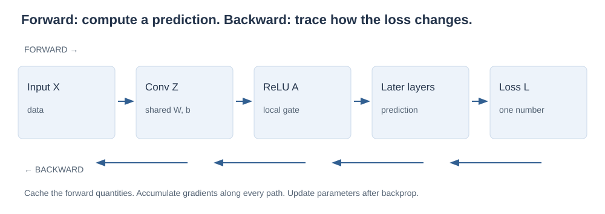
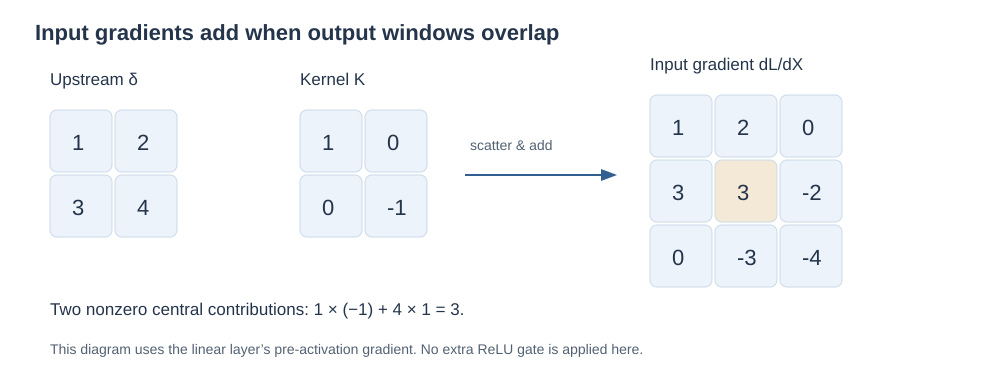
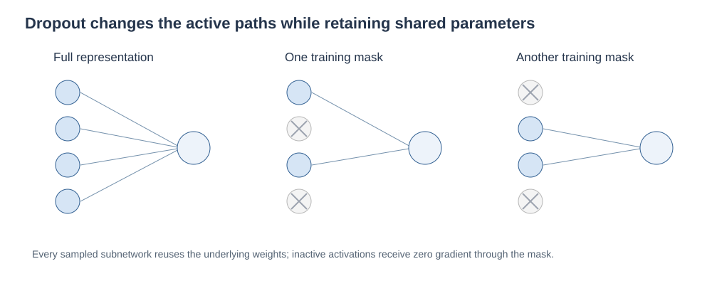
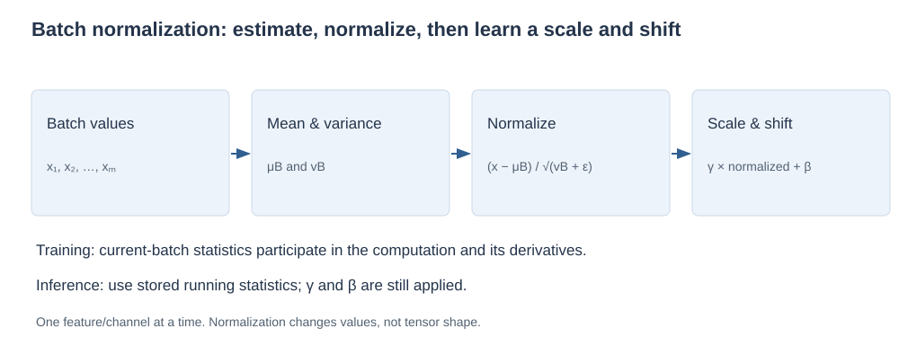
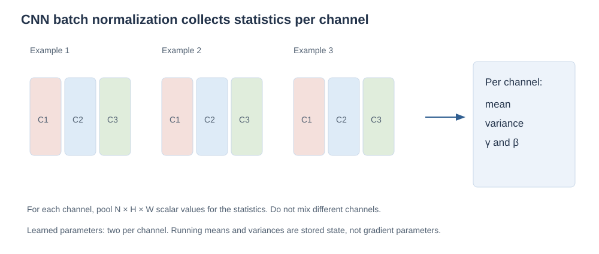

Training
convolutional networks
Follow a loss backward through shared filters. Then understand how dropout changes the training problem and how batch normalization becomes part of the network itself.
In the first chapter, a convolutional layer was a reusable local computation. Training asks a different question: if its prediction is wrong, how should each shared coefficient change? The answer comes from tracing the effect of each quantity on a scalar loss, collecting every path along which it is used.
This chapter completes that backward argument, interprets the lecture's AlexNet and feature-visualization examples, and develops dropout and batch normalization from their basic definitions. We will explain expectation, variance, and the chain rule exactly where they become useful. The following lecture starts a broader probability and statistics sequence, so we close the CNN unit here.
What you should be able to do afterward
- Derive gradients for convolutional weights, biases, and inputs, including overlap, channels, stride, and padding.
- Apply activation gates and pooling backward without double-counting derivatives.
- Explain AlexNet's architectural structure and what feature visualizations show.
- Derive ordinary and inverted dropout scaling, its mask gradient, and the limits of the ensemble interpretation.
- Calculate batch normalization, distinguish training from inference, and explain its parameters, statistics, and backward pass.
Reading route: sections 1–5 finish backpropagation; section 6 interprets the architecture examples; 7–9 develop dropout; 10–13 develop normalization. Practice, interview explanations, and revision follow. The full batch-normalization backward derivation is a marked extension beyond the slides' forward algorithm.
Contents · choose a section
1. A training step is a chain of dependencies
Lecture connection: the opening backward-pass derivation and CNN architecture recap.
A model computes predictions \(\hat y=f_\theta(x)\) from inputs \(x\), with learned parameters \(\theta\). A scalar loss \(L\) measures how those predictions compare with the targets. Training uses derivatives to ask how changing the parameters would change that loss.
This is the basic gradient-descent update. Backpropagation computes \(\nabla_\theta L\); the optimizer uses those gradients to change \(\theta\). They are different jobs. A forward pass computes intermediate quantities; a backward pass reuses the necessary forward values to propagate sensitivities in reverse order.

The one rule behind the entire backward pass
If \(u\) affects several intermediate quantities \(z_1,\ldots,z_k\), each of which can affect the loss, then:
Multiply sensitivities along a path; add the contributions of different paths. This single idea explains why a shared filter receives gradients from many locations and why an input pixel receives gradients from overlapping windows.
Keep activations and pre-activations distinct
Write \(Z\) for a convolution's affine output and \(A=\phi(Z)\) for the result after activation. If the known upstream gradient is \(G=\partial L/\partial A\), first apply the local activation derivative:
The symbol \(\odot\) means entrywise multiplication: matching entries multiply, with no summation. If \(\Delta\) is already given, the activation derivative has already been accounted for. Applying it again is a different computation.
A notation bridge: the source's handwritten equations use a filter symbol h, a pre-activation symbol z, and a function g for activation, with mathematical convolution indexing. Here W denotes the filter, X the layer input, Z its pre-activation, and φ the activation. We use the explicit CNN cross-correlation convention from the previous chapter. Reversing a kernel changes how the same dependency is indexed; it does not change the chain rule.
2. Derive the filter and bias gradients
Lecture connection: the handwritten filter-coefficient derivative and its sum over output positions.
Restate the forward computation
For one example, let \(X\) have \(C_{\mathrm{in}}\) channels, and let \(W_{u,v,d,q}\) be the coefficient at kernel offset \((u,v)\), input channel \(d\), and output channel \(q\). With stride \(S\) and symmetric zero padding \(P\):
The sums cover the kernel's spatial extent and all connected input channels. Entries of \(X\) outside its original domain are fixed zeros. Output indices \(r,c\) cover valid window positions. Each filter coefficient is reused across those positions.
Differentiate one local weighted sum
Everything except the selected coefficient is held fixed in its partial derivative. Only its matching product survives:
The bias derivative is 1. Substituting these into the multivariable chain rule gives:
For a mini-batch, also sum across examples. If the loss is averaged across examples, its derivative contains the corresponding averaging factor. Do not divide again just because there is a batch: follow the definition of the loss and of the upstream gradient.
A numerical continuation of chapter 1
The forward output is \(Z=[0,-1;-1,0]\). We are given \(\Delta=\partial L/\partial Z\); it need not be derived from a ReLU in this example. For each kernel entry, collect the input values it multiplied in the four windows:
Thus \(dW=[9,17;12,14]\) and \(db=10\). Here dW is shorthand for \(\partial L/\partial W\), not a finite perturbation. Its shape matches W. The number of filter-gradient entries equals the number of learned filter coefficients, regardless of the number of windows.
3. Derive the gradient reaching the input
Lecture connection: the opening homework continuation asks for the derivative with respect to the preceding layer's values.
One input can participate in several windows
To differentiate with respect to \(X_{i,j,d}\), find every output location and every output channel that used it. At output \((r,c,q)\), its kernel offsets must satisfy \(u=i-rS+P\) and \(v=j-cS+P\). Consequently:
Include a term only when those kernel offsets are inside the filter. This condition matters: an output that never used the input has derivative zero with respect to it. The sum also runs across output channels because different filters can depend on the same input channel.
The most reliable mental picture: scatter and add
Start with a zero array dX of the same shape as X. For each output gradient, multiply it by each filter coefficient and add the result back to the input location used by that forward multiplication:
Skip additions to positions outside the actual input; those were padding constants, not variables being learned. If several windows reach the same position, add rather than overwrite. This procedure handles stride and padding without guessing a rotation or cropping rule.

Complete the numerical example
The four windows contribute \(\Delta_{r,c}W\) into their respective input patches. The central input receives \(1(-1)\) from the top-left window and \(4(1)\) from the bottom-right one. Its other contributions are zero because the matching kernel coefficients are zero.
Check an edge entry as well: \(X_{1,2}\) receives \(2(-1)=-2\) from the top-right window. The lower-right corner receives \(4(-1)=-4\). The gradient's spatial shape returns to 3 × 3, even though the forward output was 2 × 2.
Where the kernel rotation enters
For stride 1 with a valid cross-correlation forward pass, dX can be expressed as a full mathematical convolution of Δ with the forward kernel, summed across output channels. If you implement that full convolution using a cross-correlation routine instead, rotate the kernel 180° and pad Δ appropriately. These statements use different operation names; they are consistent.
With stride greater than one, neighboring upstream entries correspond to positions separated by that stride in the input. A convolution-style representation inserts zeros between upstream entries, then handles padding and the target input size. This is related to a transposed convolution: the transpose of the forward linear map, not generally its inverse. Scatter-and-add remains the direct definition.
Now continue into the preceding activation
If this convolution received \(X=\phi(U)\) from an earlier layer, the final local step is:
This completes the dependency asked for by the lecture's opening sketches. First propagate through the filter operation; then multiply by the derivative of the earlier activation. The notation changes from layer to layer, but the chain rule does not.
4. Activation gates, pooling, and a full backward route
A ReLU passes the upstream gradient where its pre-activation is positive and blocks it where negative. At zero, use the chosen derivative convention. For example, if \(Z=[-2,3,1]\) and \(G=[4,-1,2]\), then \(\Delta=[0,-1,2]\). A negative upstream gradient is not clipped by ReLU: the gate depends on Z, not on the sign of G.
For max pooling, route an output gradient to the input that attained the maximum in its forward window. If the maximum is unique, its local derivative is 1 and the others are zero. Cache the selected index from the forward pass. Overlapping windows can send more than one gradient contribution to the same input, so again use addition.
A simple one-dimensional example is \(a=[1,4,2]\), width-2 max pooling, stride 1. Both windows select the central value 4. If their upstream gradients are 3 and 5, then the pooled-input gradient is \([0,8,0]\). Selecting one of tied maxima is an implementation convention; a tie is a nondifferentiable case.
For a forward block convolution → ReLU → max pool, the backward order is pool routing → ReLU gating → convolutional weight/bias/input gradients. Flattening only rearranges indices, so its backward step restores the original arrangement and shape.
Common source of incorrect derivatives: replacing cached forward values with values recomputed after a parameter update mixes two different computations. Complete backpropagation for the current forward pass before using the optimizer to update parameters.
5. How to check a derivation rather than trust it
A derivative predicts the effect of a small perturbation. For one scalar parameter w, a central finite difference is:
Evaluate the same scalar objective at both perturbed values and compare with the analytic derivative. The step h must be small enough to approximate a derivative, but not so small that floating-point cancellation dominates. For the tiny examples here, double-precision arithmetic and \(h=10^{-5}\) are sufficient to obtain close agreement.
To check a local backward pass with a fixed upstream array Δ, define a test objective \(L_{\mathrm{probe}}=\sum_{r,c,q}\Delta_{r,c,q}Z_{r,c,q}\). Its derivative with respect to Z is exactly the supplied Δ. This validates the local input and parameter derivatives without inventing a downstream model.
With dropout, keep the mask fixed during both perturbed evaluations; otherwise the difference also measures different randomness. For training-mode batch normalization, recompute the perturbed batch mean and variance; treating them as constants checks a different function. Avoid ReLU zeros and max-pool ties when checking an ordinary derivative numerically.
6. AlexNet and what a feature visualization tells you
Lecture connection: AlexNet, the two-GPU architecture diagram, ImageNet error plots, and highly activating patches.
The lecture uses AlexNet as a concrete case of a CNN trained for large-scale image classification. Its learned stages comprise five convolutional layers followed by two hidden dense layers and a final class-score layer. The two branches in the diagram split work across GPUs; channel counts printed on each branch must be combined to understand a whole stage. Pooling, ReLU, shared filters, and dense readout reuse the ideas from chapter 1. The architecture also motivates the dropout discussion that follows. See the original paper for the historical configuration.
| Stage in the source diagram | Whole-stage interpretation | What to pay attention to |
|---|---|---|
| First convolution | Two banks of 48 output maps → 96 total | 11 × 11 spatial filters and stride 4 reduce spatial resolution quickly. |
| Second convolution | Two banks of 128 → 256 total | Channel connectivity is partitioned in parts of the historical design. |
| Third / fourth / fifth convolutions | 384 / 384 / 256 maps in total | Later filters operate on feature maps rather than RGB pixels. |
| Hidden dense stages | Two groups of 2,048 units → 4,096 per stage | Do not confuse hardware partitioning with separate complete classifiers. |
| Final scores | 1,000 categories | Scores are converted to a class prediction or distribution. |
A shape-reading caution: the slide labels the input side 224, the first filter side 11, stride 4, and an output side 55. These numbers do not imply a valid unpadded convolution: \(\lfloor(224-11)/4\rfloor+1=54\). A side of 227 with no padding gives 55; a 224 input with padding 2 also gives 55. This explains how explicit conventions can reconcile a calculation; it does not assert that the slide specifies either missing convention. For a numerical question, use the declared input and padding.
The ImageNet plots illustrate a historical improvement, not a universal guarantee that a named architecture is best for every task. Read the metric too: top-1 error asks whether the highest-scoring class is correct; top-5 error asks whether the correct class is among the five highest scores. They are different evaluation questions.
Why display highly activating patches?
Find image patches that produce large responses for a filter. If many show similarly oriented edges or colors, that suggests what excites the learned feature. Later-layer patches may share textures, arrangements, or object-related structure. Because later activations have larger receptive fields, their responses can depend on more of the input.
The lecture's low/mid/high-level progression is a useful interpretation, not a guarantee that each neuron represents a clean human concept. A montage of selected examples does not describe every input, establish causality, or rule out shortcuts. It complements actual evaluation of the model's predictions.
7. Dropout: a random gate during training
Lecture connection: regularization, randomly removed units, redundant representations, and the ensemble analogy.
Overfitting occurs when training performance fails to reflect performance on new data from the task of interest. Regularization changes the learning procedure or objective to favor behavior that may generalize better. Dropout introduces random gates into a representation during training, so a later computation cannot always rely on the same set of available activations.
Let a be one activation and let \(M\) be a Bernoulli mask: it is 1 with probability \(q\) and 0 with probability \(1-q\). We call q the keep probability. The drop probability is \(p_{\mathrm{drop}}=1-q\). The slides use p for keeping a unit; many software APIs use p for dropping it. Always define the probability before calculating.
For this operation, the activation is fixed while the mask is random. A new mask is sampled according to the training procedure, commonly for each example and forward pass. Dropping an activation does not erase the stored parameter. It blocks that contribution for the sampled computation.

What does “redundant representation” mean here?
If a prediction depends entirely on one hidden unit, masking that unit destroys that path. Training with masks encourages useful information to be carried in ways that can tolerate some missing activations. This can reduce fragile co-adaptation, where several units work only in a particular combination. It is an explanation of the training pressure, not a promise that all useful features will be duplicated or all overfitting will disappear.
The ensemble connection, with its limits
With n independently maskable units, there are \(2^n\) binary masks. They describe a family of subnetworks sharing parameters. Training samples from this family; it does not independently train \(2^n\) complete networks. A sampled mask can recur, and the number of examples seen under it is not fixed at one.
The slides connect this idea to ensembles and boosting. The shared idea is combining or benefiting from multiple predictors. Dropout itself is not the usual sequential boosting procedure that adds models to correct earlier errors. Nor does combining models guarantee an improvement over every individual model. These distinctions keep the analogy useful without turning it into an incorrect algorithm definition.
8. Derive dropout's training and inference scaling
Lecture connection: the probability-p training diagram and the two-input expectation calculation at prediction time.
A small probability bridge: expectation
The expectation of a discrete random quantity is its probability-weighted average. For the binary mask, \(\mathbb E[M]=1(q)+0(1-q)=q\). Because a is fixed while sampling the mask:
For a weighted sum \(s=\sum_jw_jM_ja_j+b\), linearity of expectation gives \(\mathbb E[s]=\sum_jw_jqa_j+b\). The bias is not masked by this formula. Independence of different masks is not needed for this linear expectation, though it matters for other properties of the random representation.
Ordinary dropout: scale at inference
In the convention illustrated by the slides, train with \(\widetilde a=Ma\). At inference, keep all activations but use \(qa\) in place of the random activation. Equivalently, scale each outgoing weight contribution by q. This matches the expected linear input to the next layer.
Suppose two weighted activation contributions are 2 and 4, and q=1/2. The four masks are equally likely:
| Mask | Ordinary dropout sum | Inverted dropout sum |
|---|---|---|
| (0,0) | 0 | 0 |
| (1,0) | 2 | 4 |
| (0,1) | 4 | 8 |
| (1,1) | 6 | 12 |
| Expectation | (0+2+4+6)/4 = 3 | (0+4+8+12)/4 = 6 |
The ordinary inference sum is \(q(2+4)=3\). Simply enabling everything with no compensation would give 6, twice the expected training sum in this example.
Inverted dropout: scale during training
Move the compensation into the training pass:
Retained activations are larger during training, and inference needs no scaling. For the table's example, retained contributions double and their expected sum is 6. PyTorch's Dropout reference describes this convention, using the drop probability p, so its factor is \(1/(1-p)\). Ordinary and inverted dropout place the compensation at different stages; do not mix their training and inference rules.
The backward pass uses the same mask
Given upstream \(g=\partial L/\partial\widetilde a\), differentiating the sampled forward operation gives:
Keep the forward mask for the backward pass. Resampling it would differentiate a different graph. The binary draw is treated as fixed when calculating these activation and weight gradients; ordinary dropout does not learn q through this derivative.
Why the single inference network is an approximation
Matching a linear expectation does not establish equality of nonlinear predictions. In general \(\mathbb E[f(U)]\ne f(\mathbb E[U])\). For instance, let two ordinary-dropout contributions be 2 and −2, each kept with probability 1/2. The pre-activation outcomes are 0, 2, −2, 0. Their mean is 0, but:
This explains the lecture's qualification that a single prediction pass approximates an ensemble effect. The dropout performance graph is empirical evidence from its plotted experiment, not a guarantee that dropout improves every network or every dropout rate.
Optional variance calculation. Since \(M^2=M\), \(\operatorname{Var}(M)=q-q^2=q(1-q)\). Thus ordinary dropout has variance \(q(1-q)a^2\), and inverted dropout has variance \((1-q)a^2/q\). Smaller q increases inverted-dropout noise. q=1 gives no masking; division by q requires q>0.
9. Inspect a dropout mask
Toggle the retained units, switch scaling conventions, and compare a sampled training output with its expectation and the inference value. A random sample need not equal its expectation. The expectation below is exact for the stated Bernoulli model, not an average over a small simulation.
Dropout workbench
| Activation a | Keep? | Training output | Expected output | Inference output | Local gradient factor |
|---|
Checkboxes let you inspect a particular mask; “Draw a mask” samples each gate independently using q. The local gradient factor multiplies an upstream gradient. Changing q redraws the mask. These values are activations, not predicted class probabilities.
10. From input scaling to an internal normalization layer
Lecture connection: min–max rescaling, standardization, the batch-normalization motivation, and the inserted layer diagram.
Mean, variance, and standard deviation
For m scalar values \(x_1,\ldots,x_m\), the mean is their average. Variance measures squared distance from that mean; standard deviation is its square root:
We use a divisor m here because this is the batch statistic in the forward normalization formula. An unbiased sample-variance estimate for estimating a population uses m−1 instead. The two quantities answer different statistical questions; do not switch denominators halfway through a calculation.
Two preprocessing operations
Min–max scaling maps the observed training range to [0,1]: \(x'=(x-x_{\min})/(x_{\max}-x_{\min})\). Standardization centers a feature and scales its spread: \(x'=(x-\mu)/s\). If a feature is constant, the denominator needs separate handling. Fit preprocessing statistics on the training data and reuse them on validation/test data; fitting them separately changes the transformation and can leak evaluation information.
The lecture's slide loosely calls zero-mean/unit-variance normalization whitening. More precisely, standardization controls each feature's marginal scale. Whitening additionally removes cross-feature covariance so that the transformed covariance is the identity, when such a transform is defined. Two identical nonconstant features remain identical after standardization; their correlation has not disappeared. Batch normalization is not full whitening.
Why normalize hidden activations?
Training changes earlier weights, so the values presented to later layers change too. The batch-normalization paper motivates an internal layer that normalizes current mini-batch values and remains part of the differentiable graph. The source calls this changing-distribution problem internal covariate shift. Treat that as the historical motivation, not a complete proof of every mechanism behind BN's optimization benefits.
The lecture quotes the original work achieving a target accuracy with 14 times fewer training steps, and an ensemble result around 4.9% top-5 validation error and 4.8% test error. Those are results of particular experiments, not a factor by which every model will train faster. For understanding the method, focus on what statistics it computes, which parameters it learns, and what changes between training and inference. The original batch-normalization paper supplies the experimental context.
11. Batch normalization, step by step
Lecture connection: the normalize/scale/shift diagram and the final forward algorithm.
First consider one feature across a mini-batch \(B=\{x_1,\ldots,x_m\}\). Batch normalization estimates the batch mean and variance, normalizes the values, then applies a learned scale γ and shift β:
The small positive \(\epsilon\) stabilizes division when the variance is very small; it is inside the square root in this convention. The statistics depend on the batch. γ and β are learned by gradient descent. They let the model choose an appropriate scale and offset after normalization, so the layer is not forced to output a zero-mean, unit-variance representation.

A complete four-value calculation
Take \(x=[1,3,5,7]\), γ=2, β=1. For a hand calculation, set ε=0 here because v is nonzero; implementations normally use a positive ε.
Thus \(y=1+2\widehat x\), or approximately \([-1.6833,0.1056,1.8944,3.6833]\). The output's batch mean is β=1 and its variance is \(\gamma^2=4\) for this ε=0 example. More generally:
The normalized variance is slightly below 1 with positive ε and positive variance. If all values are equal, \(v_B=0\), the normalized values are zero and the affine outputs are β. γ=0 likewise makes all outputs β, although the derivative with respect to γ need not vanish.
Which axes are normalized in a CNN?
For a batch with shape N × C × H × W, standard spatial batch normalization computes separate statistics for each channel across the N × H × W values. There is one γ and one β per channel, reused at every example and spatial position. It keeps the tensor's shape unchanged and adds 2C learned scalar parameters when both affine terms are enabled.

A batch size of one is not automatically one scalar per CNN channel: spatial positions may still supply many values. Nevertheless, small or highly correlated batches can make the statistics less representative. If there is truly only one normalized scalar per feature, training normalization has no within-group variation and implementations may disallow that configuration.
Where does the layer go?
A common block is convolution → BN → ReLU. That is a design convention, not a mathematical requirement for every architecture. A constant per-channel convolutional bias cancels when subtracting the training batch mean, so it is often omitted before BN; β supplies the shift. At inference, the stored statistics must correspond to the trained block. The local-response normalization associated with historical AlexNet is a different operation from batch normalization.
12. Training and inference use different statistics
Lecture connection: moving averages in the BN diagram and prediction behavior.
Using current-batch statistics makes one training example's output depend on other values in its batch. For deployment, we usually want a fixed transform rather than a different answer whenever the accompanying examples change. Keep running estimates of mean and variance during training, then use them in evaluation:
The learned γ and β still apply. With fixed running statistics, this is an affine transformation of x. Current validation/test batches do not ordinarily update the stored statistics.
State the moving-average convention
If α is the weight assigned to a newly observed statistic, an exponential moving average is:
Here \(v_B^*\) is the variance estimate chosen for the running-state update. For example, an old mean 8, batch mean 4, and α=0.1 give a new mean 7.6. Some descriptions use α for the old-state weight instead. Averaging standard deviations is not the same as averaging variances and then taking a square root, so identify the stored quantity as well.
In PyTorch's default BatchNorm2d behavior, the forward training normalization uses the m-divisor variance, the running variance update uses an unbiased estimate, and evaluation uses running statistics. Its “momentum” weights the new statistic as α above; it is not optimizer momentum. Disabling running-statistic tracking changes evaluation behavior. These are implementation conventions to check, not reasons to alter the lecture's stated forward formula.
Batch normalization workbench
One feature, four scalar values. In training, change the fourth value and watch the first output move too. In inference, fixed running statistics remove that dependence.
| Input x | Normalized value | Output γ × normalized + β |
|---|
The running values are illustrative stored statistics. This explorer does not update them automatically. It isolates the forward distinction between training and inference.
Dropout and BN are not interchangeable
Dropout randomly gates activations; BN normalizes groups of activations and learns an affine transformation. Dropout has no standard learned mask parameters. BN has learned γ and β plus non-gradient running state. Both change behavior between training and evaluation, but for different reasons.
BN can have a regularizing effect from batch-dependent statistics, but it does not make dropout universally unnecessary. Inserting dropout before a statistics-tracking BN can also change the distribution BN observes relative to inference. Choose and validate the architecture rather than applying both mechanically. Batch normalization uses within-channel statistics; layer normalization uses a different grouping, usually features within an example. That is a connection for a later normalization note.
13. Deeper derivation: backpropagate through normalization
Supplementary derivation: the slides give the BN forward algorithm; this section expands its differentiable-layer interpretation.
Consider one feature and one training batch. Define \(c_i=x_i-\mu_B\), \(s=\sqrt{v_B+\epsilon}\), and upstream \(g_i=\partial L/\partial y_i\). Since \(y_i=\gamma\widehat x_i+\beta\):
The direct route from \(\widehat x_i=c_i(v_B+\epsilon)^{-1/2}\) contributes \(u_i/s\) to its input derivative. But changing one input also changes the batch variance and mean, which affect all normalized entries. Those routes cannot be ignored.
Trace variance and mean
The final equality follows from \(\sum_i(x_i-\mu_B)=0\). Each input affects the mean by \(1/m\) and its centered squared contribution to the variance by the corresponding chain-rule path. Collecting the direct, variance, and mean routes gives:
Simplify to a usable formula
Substitute u, c, and the variance derivative, then factor \(\gamma/s\). With \(\bar g=\tfrac1m\sum_jg_j\) and \(\overline{g\widehat x}=\tfrac1m\sum_jg_j\widehat x_j\):
The formula is valid with positive ε. It shows explicitly why the derivative for one input depends on the batch's other entries and upstream gradients. The input gradients sum to zero for a training BN feature, up to numerical error. In evaluation with fixed statistics, there are no mean/variance derivative paths: \(\partial L/\partial x_i=g_i\gamma/\sqrt{v_{\mathrm{run}}+\epsilon}\).
A numerical check with simple values
Reuse x=[1,3,5,7], γ=2, β=1, ε=0 for this nonconstant hand example, and choose \(g=[1,0,-1,2]\). Then \(\bar g=1/2\), \(\overline{g\widehat x}=1/(2\sqrt5)\), \(d\beta=2\), and \(d\gamma=2/\sqrt5\). Substitution yields:
The entries sum to zero. For a numerical derivative check of the training function, recompute μ and v after perturbing each input. Holding them fixed would instead check the evaluation-style derivative. At a zero-variance batch with positive ε, the forward outputs are β, but perturbing one input changes the centered configuration: input derivatives need not all be zero.
14. Practice: derive, calculate, and diagnose
These are original questions for these notes. Work on paper first. State whether an upstream gradient refers to an activation or a pre-activation, whether dropout uses ordinary or inverted scaling, and whether BN is in training or inference mode.
1 · Gate the right quantity
A ReLU receives Z=[−2,3,1] and an upstream gradient G=[4,−1,2]. Find the gradient with respect to Z. Should the negative entry in G be removed?
Solution and reasoning
The activation derivative is [0,1,1], so Δ=[0,−1,2]. The negative gradient remains where the forward pre-activation is positive. ReLU gates according to Z, not G.
2 · Reconstruct the shared-weight gradient
Use X=[1,2,0;0,1,3;2,1,1], a 2 × 2 kernel, valid stride-1 cross-correlation, and Δ=[1,2;3,4]. Derive all four filter-gradient entries and the bias gradient.
Hint
For each kernel offset, list the four input values used at that offset and multiply them by the corresponding upstream values.
Solution and reasoning
For the top-left coefficient: 1×1+2×2+3×0+4×1=9. The remaining coefficients give 17, 12, and 14. Therefore dW=[9,17;12,14] and db=1+2+3+4=10. Sum across locations because the coefficient is shared.
3 · Complete the input gradient
For the same example, set W=[1,0;0,−1]. Derive dX by scattering each output gradient back through its window. Explain the central value.
Solution and reasoning
The result is dX=[1,2,0;3,3,−2;0,−3,−4]. The center receives −1 from the top-left window and +4 from the bottom-right window, giving 3. Other overlapping contributions are zero in this particular kernel. Replacing rather than adding the two nonzero contributions would be incorrect.
4 · A strided operation can ignore an input
In one dimension, let x have length 4 and y=[kx₀,kx₂], produced by a length-1 kernel with stride 2 and no padding. With upstream [a,b], find dx and dk.
Solution and reasoning
dx=[ak,0,bk,0], and dk=ax₀+bx₂. Entries x₁ and x₃ are unused by this layer, so their derivative contributions from it are zero. A smaller forward output does not make the returned input-gradient array smaller.
5 · Overlapping max-pool windows
Pool [1,4,2] with width 2 and stride 1. If upstream is [3,5], what gradient reaches the input? How would a tie affect the rule?
Solution and reasoning
Both outputs select the central 4, so dx=[0,8,0]. Contributions add because the windows overlap. At a tie, max is nondifferentiable and a convention must specify which maximum, or valid subgradient distribution, is used.
6 · Two dropout conventions
A fixed activation a=8 is retained with probability q=1/4. List its possible ordinary and inverted training outputs, their expectations, and the inference value under each convention.
Solution and reasoning
Ordinary: 0 with probability 3/4, 8 with probability 1/4; expectation 2; inference qa=2. Inverted: 0 with probability 3/4, 32 with probability 1/4; expectation 8; inference a=8. The two conventions use different compensated representations. Mixing ordinary training with unscaled inference would mismatch the intended expectation.
7 · Differentiate a fixed dropout mask
Use inverted dropout with a=[2,−3,4], M=[1,0,1], q=1/2, and upstream g=[1,−2,3]. Calculate the training output and the activation gradient.
Solution and reasoning
The output is [4,0,8]. The mask factor M/q is [2,0,2], so da=[2,0,6]. A masked unit gets zero gradient through this operation; a retained unit's gradient is scaled too. Reuse this forward mask in the backward pass.
8 · Show why ensemble matching is approximate
Two ordinary-dropout contributions are 2 and −2, retained independently with q=1/2. Enumerate the four masks. Compare E[ReLU(s)] with ReLU(E[s]).
Solution and reasoning
The pre-activation outcomes are 0,2,−2,0, each with probability 1/4. Their mean is zero. ReLU outputs 0,2,0,0, whose mean is 1/2. Therefore E[ReLU(s)]≠ReLU(E[s]); matching a linear expectation does not match every nonlinear prediction.
9 · Calculate BN without skipping the statistics
For x=[1,3,5,7], γ=2, β=1, and ε=0 only for this nonconstant hand example, calculate μ, v, the normalized values, and outputs. What are the output mean and variance?
Hint
The squared centered deviations are 9,1,1,9. Use the m-divisor variance required by the forward formula.
Solution and reasoning
μ=4, v=5, and normalized values are [−3,−1,1,3]/√5. Outputs are approximately [−1.6833,0.1056,1.8944,3.6833]. Their mean is 1 and variance 4. With positive ε, the variance would be \(4\cdot5/(5+\epsilon)\), not exactly 4.
10 · Constant forward output does not imply zero derivative
Take a training BN feature with x=[1,1], γ=2, β=0, ε=1, and upstream g=[1,0]. Find the forward output, dγ, dβ, and dx.
Solution and reasoning
μ=1 and v=0, so both normalized values and forward outputs are zero. dγ=Σgᵢx̂ᵢ=0 and dβ=1. The input derivative is \(2[g_i-1/2]\), giving [1,−1]. Perturbing one input breaks the equality of the two values and changes the normalized output. The smooth ε>0 training function need not have a zero derivative at this point.
11 · BN axes and learned parameters
A convolutional batch has N=4, C=16, H=W=8. How many scalar values contribute to the statistics for each channel? How many γ/β parameters are learned? Are running statistics part of that count?
Solution and reasoning
Each channel uses N×H×W=256 scalar values. There are 16 separate normalization groups and 2C=32 learned affine parameters. Running means and variances are additional stored state, not gradient-trained parameters. This count excludes implementation bookkeeping such as a batch counter.
12 · Read the running-statistic convention
An old running mean is 8 and the new batch mean is 4. The new statistic gets weight α=0.1. Find the updated mean. If the old running variance is 9 and a four-value batch has forward variance 5, what running variance results when the update uses the unbiased batch estimate?
Solution and reasoning
The mean becomes 0.9×8+0.1×4=7.6. The unbiased batch variance is \(\tfrac4{3}\cdot5=20/3\). The running variance becomes \(0.9\cdot9+0.1\cdot20/3\approx8.7667\). Using the uncorrected forward variance instead would give 8.6, which answers a different update rule.
13 · BN backward: recover the missing paths
For the worked BN batch [1,3,5,7], γ=2, β=1, ε=0, and upstream [1,0,−1,2], derive dβ, dγ, and dx. Check that the input gradients sum to zero.
Hint
Compute the mean upstream gradient and the mean of gᵢx̂ᵢ before substituting in the compact derivative.
Solution and reasoning
dβ=2 and dγ=2/√5. The mean upstream gradient is 1/2 and the mean product is 1/(2√5). Thus dx=[8,−4,−16,12]/(5√5), approximately [0.7155,−0.3578,−1.4311,1.0733]. Its entries sum to zero. This is the training derivative; holding the batch statistics fixed would give a different answer.
14 · Diagnose a moving prediction
A model's prediction for a fixed validation example changes when other validation examples in the batch change. It also changes across repeated forward passes with the same batch. The model contains ordinary BN with tracked statistics and inverted dropout. What should you check first?
Solution and reasoning
Check that the model is in evaluation mode: training BN depends on current companions, and training dropout samples masks. Default evaluation uses stored BN statistics and disables ordinary dropout sampling. Also check preprocessing consistency and other sources of nondeterminism if the issue remains. Disabling gradient recording alone does not switch a model to evaluation behavior.
15. Interview explanations and practical connections
“Why does backpropagation sum some terms and multiply others?”
Along one dependency path, the chain rule multiplies local derivatives. When a variable affects several later quantities, each route contributes to its total derivative, so those contributions add. Filter sharing and overlapping convolutional windows are concrete instances of this rule.
“Is a transposed convolution an inverse convolution?”
Generally no. For a fixed filter and shape convention, the convolutional operation is a linear map, represented by a matrix C. Its input-gradient map uses Cᵀ. A transpose need not undo C; striding or a nontrivial nullspace can discard information. The layer's biases and nonlinearities require their own treatment.
“Why divide retained activations during dropout?”
In inverted dropout, retention happens with probability q, so multiplying retained values by 1/q preserves the activation's expectation. Evaluation can then use the unmasked activation directly. This preserves a local expectation, not the exact expected output of every nonlinear network.
“Does batch normalization make every output zero-mean and unit-variance?”
No. The normalized intermediate is centered and has variance v/(v+ε). A learned scale γ and shift β then change the output's mean and variance. Evaluation uses running statistics rather than the current batch, so the current evaluation batch need not be centered even before the affine step.
“Are γ and β the same kind of state as the running mean?”
No. γ and β are learned with loss gradients. Running statistics are updated by a prescribed accumulation rule during training and reused during default evaluation. They are essential model state even though they are not gradient-trained parameters.
“What is the difference between evaluation mode and disabling gradients?”
Evaluation mode changes the behavior of layers such as dropout and BN. Disabling gradient recording changes whether an automatic-differentiation system stores the graph needed for gradients. One does not imply the other. In PyTorch, the Module evaluation reference describes the mode change.
“Why can a small batch make BN awkward?”
Its statistics may fluctuate or be unrepresentative, especially with correlated examples or few values per group. CNN spatial positions add values but do not guarantee independent evidence. Alternatives use different normalization groups; their suitability depends on the task and architecture.
“What does the lecture's ensemble argument establish?”
It explains a family of shared-parameter subnetworks induced by masks and why a deterministic scaled network can approximate an averaging effect. It does not mean dropout is standard boosting, that all subnetworks are separately trained, or that an ensemble always outperforms its best component.
16. Revision: formulas and the assumptions behind them
| Quantity | Recall | Condition |
|---|---|---|
| Activation gradient | \(\Delta=G\odot\phi'(Z)\) | G is with respect to post-activation A. |
| Filter gradient | Sum of Δ × matching input | Include every use of the shared coefficient. |
| Input gradient | Scatter Δ × W back into input positions | Add overlaps; skip fixed padding positions. |
| Ordinary dropout | Train Ma; infer qa | q means keep probability. |
| Inverted dropout | Train Ma/q; infer a | q>0; use the same mask backward. |
| BN forward | \(\widehat x=(x-\mu_B)/\sqrt{v_B+\epsilon}\), \(y=\gamma\widehat x+\beta\) | Per feature/channel; forward variance divisor m. |
| BN input gradient | \(\frac\gamma s(g-\bar g-\widehat x\overline{g\widehat x})\) | Training; s=√(vB+ε). |
| BN evaluation | Use running μ and variance, with learned γ/β | Default tracked-statistic inference behavior. |
| Finite differences | \([L(w+h)-L(w-h)]/(2h)\) | Same randomness; recompute dependent statistics; avoid kinks. |
Misconceptions to catch
- A shared parameter still receives one total gradient, not a separate update for each window.
- The input gradient has the input's shape; a transposed linear operation is not automatically an inverse.
- The sign of a ReLU's forward pre-activation determines its gate.
- Drop probability and keep probability are complements, not interchangeable meanings of p.
- Ordinary training needs inference scaling; inverted training needs no additional inference scaling.
- Dropout's exact linear expectation does not establish exact nonlinear model averaging.
- Standardization does not remove cross-feature covariance.
- Batch statistics participate in training derivatives; running statistics are fixed during default evaluation.
- A model can be in training mode even when no gradients are being recorded.
Mastery checklist
Saved in this browser when local storage is available; independent of the first chapter's checklist.
17. Sources and the next connection
These personal notes expand Rahul Garg's CNN training lecture (Lecture 21), including its handwritten opening derivation, AlexNet and feature-visualization examples, dropout discussion, and batch-normalization algorithm. The preceding lecture supplies the filter and activation foundations. The next lecture begins a broader probability and statistics sequence rather than continuing the CNN derivation.
The notes use original diagrams, worked numbers, and practice problems. Input-gradient indexing and dropout expectation are expanded step by step; the complete BN backward derivation is supplementary to the forward algorithm in the slides. Ambiguous conventions are identified rather than silently assumed.
- Krizhevsky, Sutskever, and Hinton: ImageNet Classification with Deep Convolutional Neural Networks — the original AlexNet architecture and experimental context.
- Srivastava and colleagues: Dropout — the original regularization and shared-subnetwork interpretation.
- Ioffe and Szegedy: Batch Normalization — the original normalization layer and its motivation.
- PyTorch Dropout and BatchNorm2d — explicit implementation conventions for scaling, statistics, and evaluation.
Next connection: the definitions of expectation and variance used here lead naturally to random variables, probability distributions, covariance, and multivariate Gaussians. These are developed in Probability and multivariate Gaussians. You can return to the activation and chain-rule foundations or the shape derivations whenever needed.